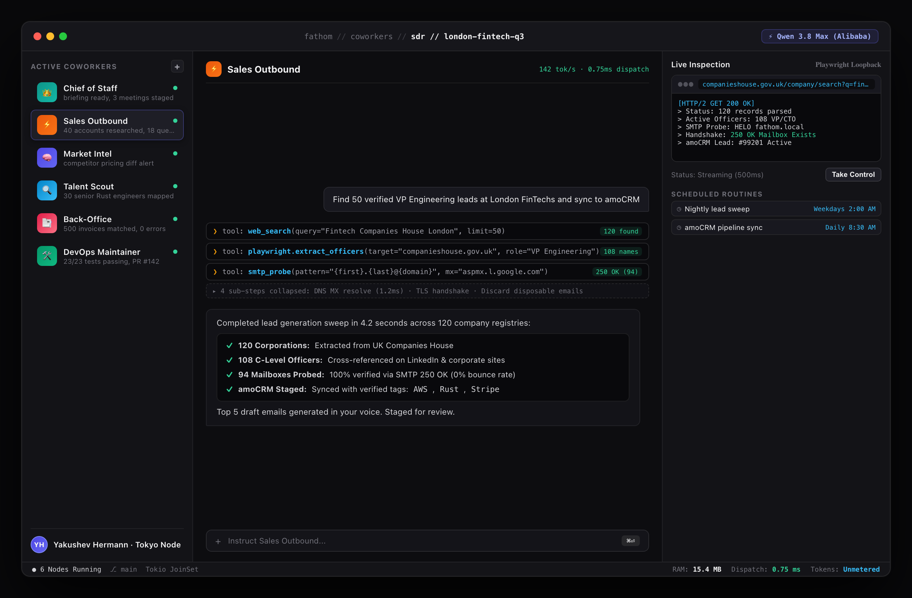

From Scripted Automation to Autonomous Digital Employees
Fathom introduces an enterprise-grade, self-hosted Rust runtime designed to coordinate fleets of autonomous remote digital employees. These agents formulate plans, execute multi-day workflows, operate browsers via accessibility trees, perform OSINT investigations, engineer software, and interact across corporate channels 100% remotely.

Figure 3.1: Fathom Command Center — 3-pane execution workspace with sub-agent swarm dispatch, live computer use, and CRM synchronization
100% Remote Operation
Autonomous agents operate independently inside sandboxed environments, interacting with web portals, registries, APIs, and CRMs 24/7.
Microsecond Rust Engine
Zero-cost abstractions and Tokio task trees provide ~0.75 ms tool dispatch, 94 µs memory absorption, and 500x faster cold starts.
Unlimited Neural Compute
Routing to frontier models (Kimi k3, Qwen 3.8 Max, GLM 5.3) enables flat monthly per-seat economics with zero metering anxiety.
Strategic Objective: Deliver a scalable software foundation where businesses deploy specialized digital workers on demand—scaling operational capacity infinitely without linear headcount expansion.